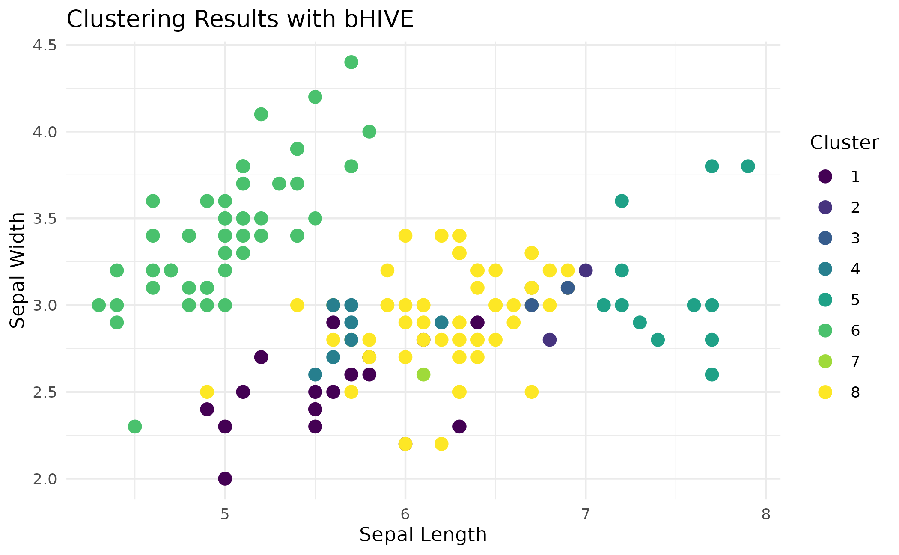
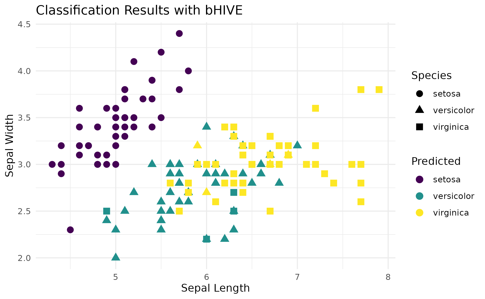
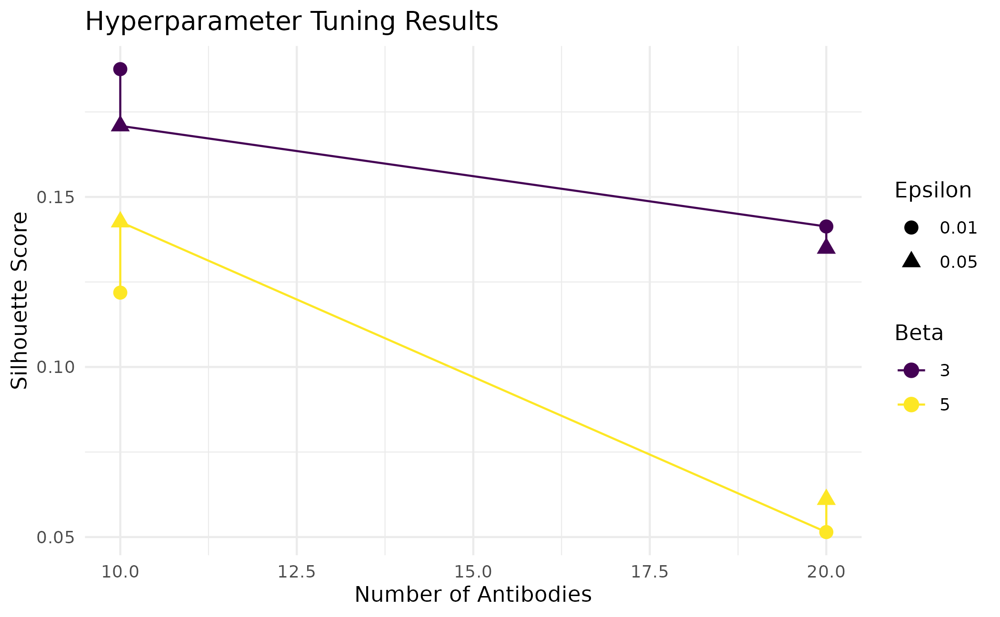
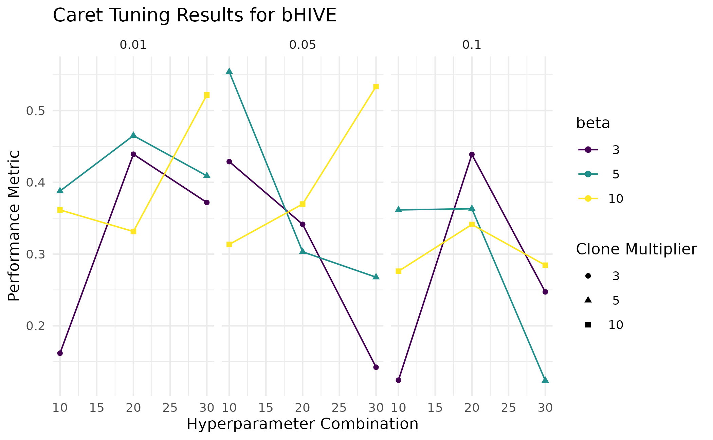
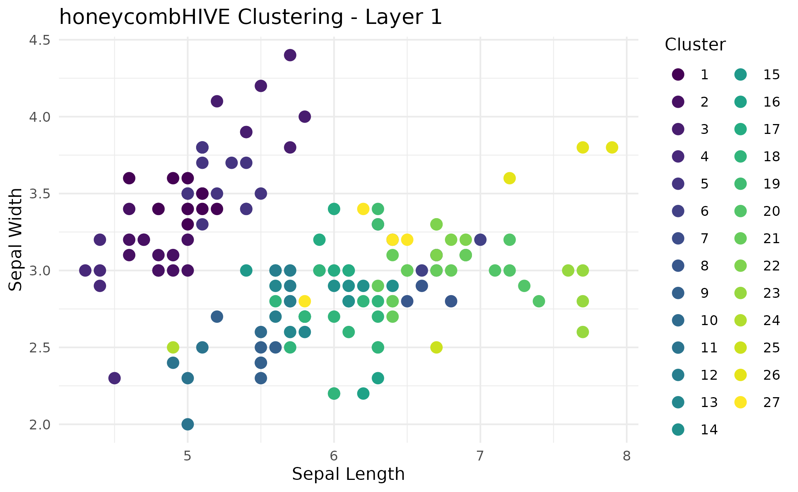
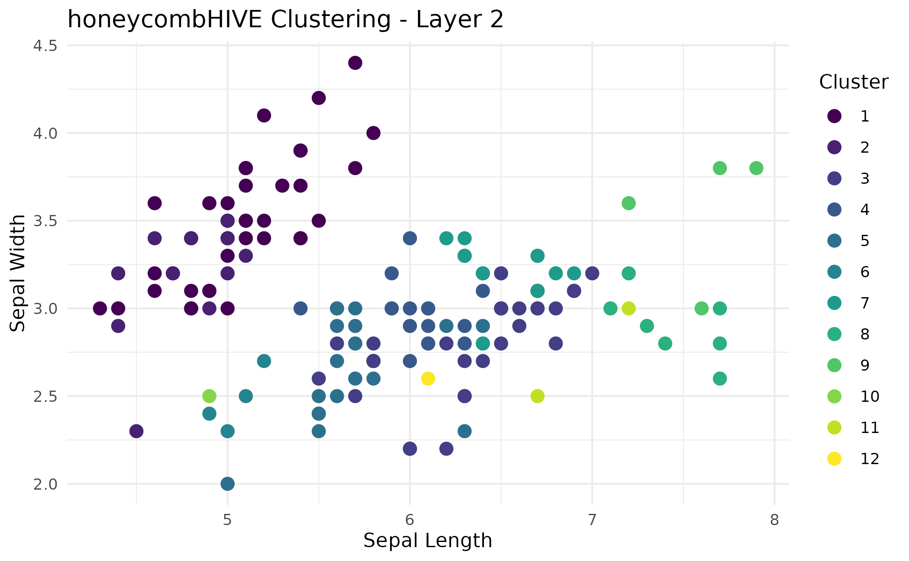
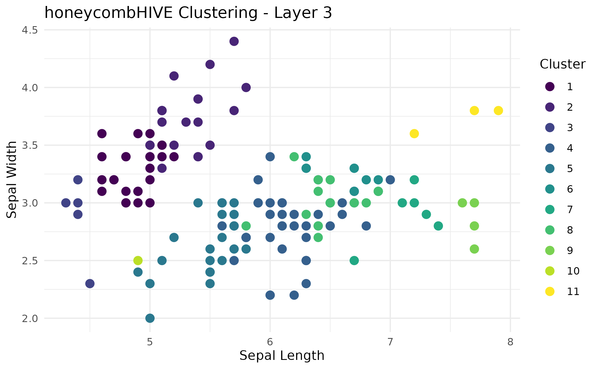
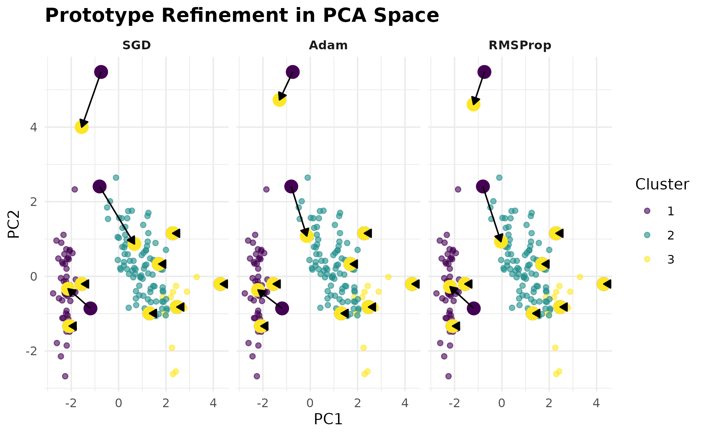
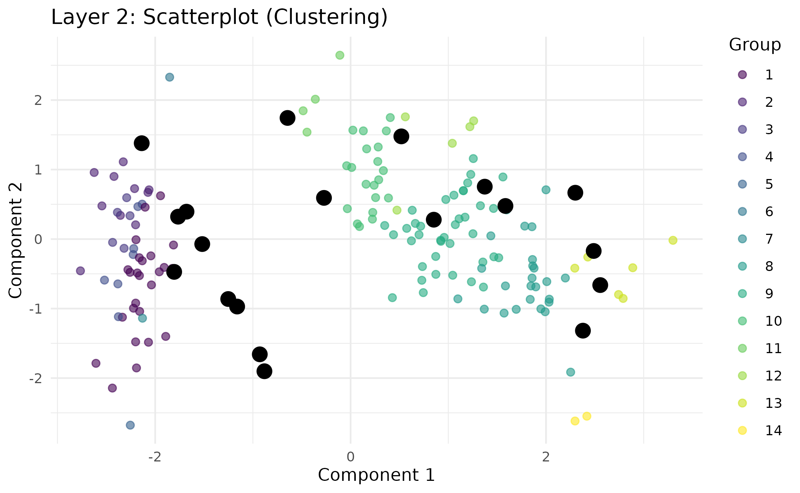

The buzz on using bHIVE
Nick Borcherding
Washington University in St. Louis, School of Medicine, St. Louis, MO, USAncborch@gmail.com
2026-06-09
Source:vignettes/bHIVE.Rmd
bHIVE.RmdIntroduction
The bHIVE package implements an Artificial Immune Network (AI-Net) algorithm for clustering and classification tasks. Inspired by biological immune systems, bHIVE uses principles like clonal selection, mutation, and suppression to analyze and model data.
This vignette demonstrates how to: 1. Perform clustering and
classification using bHIVE. 2. Tune hyperparameters using
swarmbHIVE. 3. Use the caret wrapper for easy
integration with machine learning workflows. 4. Use multilayered immune
networks with honeycombHIVE 5. Visualize results with
ggplot2.
Parameters for bHIVE()
The behavior of the bHIVE function can be fine-tuned
using a range of hyperparameters. Below is a description of the key
parameters:
| Parameter | Description |
|---|---|
X |
A numeric matrix or data frame of input features (rows are observations, columns are features). |
y |
(Optional) Factor target vector for classification. If
NULL, clustering is performed. |
task |
Specifies the task: "clustering" or
"classification". |
nAntibodies |
Number of initial antibodies in the population. Larger values increase diversity but add computational cost. |
beta |
Clone multiplier. Determines how many clones are generated for top-matching antibodies. |
epsilon |
Suppression threshold. Antibodies closer than epsilon
are considered redundant and removed. |
maxIter |
Maximum number of iterations for the algorithm. |
affinityFunc |
Affinity (similarity) function. Options include
"gaussian", "laplace",
"polynomial", "cosine",
"hamming". |
distFunc |
Distance function for clustering and suppression. Options include
"euclidean", "manhattan",
"cosine", "minkowski",
"hamming". |
affinityParams |
A list of optional parameters for the affinity/distance functions. |
mutationDecay |
Factor controlling how the mutation rate decays over iterations.
Default is 1.0 (no decay). |
mutationMin |
Minimum mutation rate to avoid zero mutation. |
maxClones |
Maximum number of clones per antibody. Default is unlimited
(Inf). |
stopTolerance |
Tolerance for stopping the algorithm if the antibody population size stabilizes. |
noImprovementLimit |
Number of iterations without improvement before early stopping. |
initMethod |
Method for initializing antibodies. Options: "sample"
(randomly selects rows from X), "random"
(Gaussian noise), "random_uniform" (samples uniformly in
[min, max] of each column), or "kmeans++" (kmeans++-like
initialization for coverage). |
k |
Number of top-matching antibodies to consider during cloning. |
seed |
Random seed for reproducibility. |
verbose |
Logical. If TRUE, prints progress messages for each
iteration. |
How bHIVE Works
-
Affinity Calculation: Measures the similarity
between each data point and antibodies using a specified
affinityFunc. - Clonal Expansion and Mutation: Generates clones of top-matching antibodies, introducing diversity via mutation.
- Network Suppression: Removes antibodies that are too similar to maintain diversity in the population.
- Assignment: Assigns data points to antibodies (clusters, labels, or numeric predictions).
Example of Parameter Selection
The following example demonstrates how to configure the
bHIVE function for clustering, emphasizing the impact of
key parameters:
# Load the Iris dataset
data(iris)
X <- as.matrix(iris[, 1:4])
# Configure bHIVE parameters for clustering
set.seed(42)
res <- bHIVE(
X = X, # Input data
task = "clustering", # Task type
nAntibodies = 20, # Number of antibodies
beta = 5, # Clone multiplier
epsilon = 0.01, # Suppression threshold
maxIter = 20, # Maximum iterations
affinityFunc = "gaussian", # Affinity function
distFunc = "euclidean", # Distance function
verbose = TRUE # Print progress
)Applications
Clustering
Clustering is an unsupervised learning task where we
group similar data points based on their features. In this example, we
cluster the numeric features of the Iris dataset using
bHIVE.
# Load Iris dataset
data(iris)
X <- as.matrix(iris[, 1:4])
# Perform clustering
set.seed(42)
res <- bHIVE(X = X,
task = "clustering",
nAntibodies = 10,
beta = 5,
epsilon = 0.05,
maxIter = 20,
k = 3,
verbose = FALSE)
# Add cluster assignments to the data
iris$Cluster <- as.factor(res$assignments)
# Visualize clusters
ggplot(iris, aes(x = Sepal.Length,
y = Sepal.Width,
color = Cluster)) +
geom_point(size = 3) +
labs(title = "Clustering Results with bHIVE",
x = "Sepal Length",
y = "Sepal Width") +
scale_color_viridis(discrete = TRUE) +
theme_minimal()
Classification
Classification is a supervised learning task where
data points are assigned to predefined categories based on their
features. Here, we classify the species of Iris flowers using
bHIVE.
# Classification setup
y <- iris$Species
# Perform classification
set.seed(42)
res <- bHIVE(X = X,
y = y,
task = "classification",
nAntibodies = 100,
beta = 5,
epsilon = 0.05,
initMethod = "random",
k = 4,
verbose = FALSE)
# Visualize classification results
iris$Predicted <- res$assignments
ggplot(iris, aes(x = Sepal.Length,
y = Sepal.Width,
color = Predicted,
shape = Species)) +
geom_point(size = 3) +
labs(title = "Classification Results with bHIVE",
x = "Sepal Length",
y = "Sepal Width") +
scale_color_viridis(discrete = TRUE) +
theme_minimal()
Comparing predicted vs actual
table(Predicted = res$assignments, Actual = y)## Actual
## Predicted setosa versicolor virginica
## setosa 50 0 0
## versicolor 0 37 1
## virginica 0 13 49Hyperparameter Tuning
Tuning hyperparameters is crucial for optimizing the performance of
machine learning algorithms. In this example, we perform hyperparameter
tuning for clustering using swarmbHIVE.
grid <- expand.grid(
nAntibodies = c(10, 20),
beta = c(3, 5),
epsilon = c(0.01, 0.05)
)
# Perform tuning
set.seed(42)
tuning_results <- swarmbHIVE(X = X,
task = "clustering",
grid = grid,
metric = "silhouette",
verbose = FALSE)
# Visualize tuning results
ggplot(tuning_results$results, aes(x = nAntibodies,
y = metric_value,
color = factor(beta))) +
geom_line() +
geom_point(aes(shape = as.factor(epsilon)),
size = 3) +
labs(title = "Hyperparameter Tuning Results",
x = "Number of Antibodies",
y = "Silhouette Score",
color = "Beta",
shape = "Epsilon") +
scale_color_viridis(discrete = TRUE) +
theme_minimal()
Best parameters
tuning_results$best_params## nAntibodies beta epsilon metric_value
## 1 10 3 0.01 0.1875808Using the caret wrapper
The bHIVE package provides a caret wrapper
for seamless integration with the caret framework, allowing
for easy cross-validation and hyperparameter tuning. Here, we
demonstrate classification on the iris dataset.
data(iris)
X <- as.matrix(iris[, 1:4])
y <- iris$Species
# Splitting Training and Validation Data Sets
set.seed(42)
sample.idx <- sample(nrow(X), nrow(X)*0.7)
x_test <- X[sample.idx,]
x_val <- X[-sample.idx,]
y_test <- y[sample.idx]
y_val <- y[-sample.idx]
train_control <- trainControl(method = "cv", number = 2)
set.seed(42)
model <- train(x = x_test,
y = y_test,
method = bHIVEmodel,
trControl = train_control,
tuneGrid = expand.grid(
nAntibodies = c(10, 20, 30),
beta = c(3, 5, 10),
epsilon = c(0.01, 0.05, 0.1)),
verbose = FALSE)
# Visualize caret results
ggplot(model) +
labs(title = "Caret Tuning Results for bHIVE",
x = "Hyperparameter Combination",
y = "Performance Metric") +
scale_color_viridis(discrete = TRUE) +
theme_minimal()
Applying the caret-based model
To use the best performing model from the above, we just using the
predict() function with the separated validation data set
(X_val).
## Actual
## Predicted setosa versicolor virginica
## setosa 11 0 13
## versicolor 0 14 5
## virginica 1 1 0honeycombHIVE: Multilayered bHIVES
In honeycombHIVE, clustering proceeds hierarchically
across multiple layers:
honeycombHIVE iteratively builds and refines a network
of “antibodies” (prototypes) to capture complex patterns in data.
Initially, the bHIVE algorithm creates a set of prototypes,
and then each layer can be fine-tuned using gradient-based updates (via
the refineB() function) with flexible optimizers like SGD,
Adam, and RMSProp.
Fo each layer, a collapse step aggregates the refined prototypes - by computing a centroid, medoid, or another statistic - compressing the data into a new, lower-dimensional representation where each prototype becomes a new observation. This new representation serves as the input for the next layer, similar to neural network architecture.
# Load the Iris dataset
data(iris)
X <- as.matrix(iris[, 1:4])
# Run honeycombHIVE for clustering
res <- honeycombHIVE(X = X,
task = "clustering",
epsilon = 0.05,
layers = 3,
nAntibodies = 30,
beta = 5,
maxIter = 10,
verbose = FALSE)
# Visualize results from each layer
for (i in seq_along(res)) {
# Create a data frame for plotting; add original Sepal.Length and Sepal.Width
plot_df <- data.frame(
Sepal.Length = iris$Sepal.Length,
Sepal.Width = iris$Sepal.Width,
Cluster = factor(res[[i]]$membership) # cluster labels from layer i
)
# Basic ggplot scatter plot
plot <- ggplot(plot_df, aes(x = Sepal.Length,
y = Sepal.Width,
color = Cluster)) +
geom_point(size = 3) +
labs(
title = paste("honeycombHIVE Clustering - Layer", i),
x = "Sepal Length",
y = "Sepal Width"
) +
theme_minimal() +
scale_color_viridis(discrete = TRUE)
print(plot)
}


Note: If you use task = "classification", honeycombHIVE
will generate multi-layer predictions. You can compare each layer’s
predictions against the true labels to see if performance improves or if
the data become too collapsed.
Gradient-based Refinement
The refineB() function takes the prototypes produced by
the bHIVE() algorithm and fine-tunes them using
gradient‐based updates. In addition to the basic parameters:
- loss: The loss function used to guide refinement. For a classification task, “categorical_crossentropy” is a typical choice.
- steps: The number of gradient update iterations.
- lr: The learning rate for each update.
-
optimizers
- sgd: Standard stochastic gradient descent.
- momentum: SGD with momentum. (Control the momentum with momentum_coef).
- adagrad: Adaptive gradient descent.
- adam: Adaptive moment estimation. (Control the decay rates with beta1 and beta2).
- rmsprop: Root Mean Square Propagation. (Control the decay of the squared gradient average with rmsprop_decay)
# Prepare the Iris dataset
X <- as.matrix(iris[, 1:4])
y <- iris$Species
# Run bHIVE to obtain initial antibody prototypes.
set.seed(42)
res <- bHIVE(X = X,
y = y,
task = "classification",
nAntibodies = 10,
beta = 5,
epsilon = 0.05,
initMethod = "random",
k = 4,
verbose = FALSE)
Ab <- res$antibodies
colnames(Ab) <- colnames(X)
assignments <- res$assignments
# Ensure assignments are numeric indices.
assignments <- as.integer(factor(assignments, levels = unique(assignments)))
# PCA of the Iris data for visualization in 2D
pca <- prcomp(X, scale. = TRUE)
X_pca <- pca$x[, 1:2]
colnames(X_pca) <- c("PC1", "PC2")
# Transform initial prototypes into PCA space.
A_bhive_pca <- predict(pca, Ab)
# Run refinement using several optimizers.
optimizers <- c("sgd", "adam", "rmsprop")
refined_list <- lapply(optimizers, function(opt) {
Ab_refined <- refineB(A = Ab,
X = X,
y = y,
assignments = assignments,
loss = "categorical_crossentropy",
task = "classification",
steps = 5,
lr = 0.01,
verbose = FALSE,
optimizer = opt,
beta1 = 0.9,
beta2 = 0.999,
rmsprop_decay = 0.9)
colnames(Ab_refined) <- colnames(X)
A_refined_pca <- predict(pca, Ab_refined)
data.frame(optimizer = opt,
PC1_after = A_refined_pca[,1],
PC2_after = A_refined_pca[,2])
})
refined_df <- do.call(rbind, refined_list)
refined_df$optimizer <- factor(refined_df$optimizer, levels = optimizers)
Interpretation * Data points are shown in a light
transparency, colored by their cluster assignments (as determined by the
original bHIVE algorithm). * Initial prototypes are shown
in dark purple. These are the prototypes (antibodies) before refinement.
* Refined prototypes are shown in bright yellow. The arrows indicate the
direction and magnitude of the update from the original positions to the
refined positions.
Applying Refinement to honeycombHIVE
data(iris)
X <- as.matrix(iris[, 1:4])
y <- iris$Species
res_class <- honeycombHIVE(X = X,
y = y,
layers = 3,
task = "classification",
nAntibodies = 30,
beta = 5,
epsilon = 0.01,
verbose = FALSE)
res_class_refine <- honeycombHIVE(X = X,
y = y,
task = "classification",
layers = 3,
nAntibodies = 30,
beta = 5,
epsilon = 0.01,
refine = TRUE,
refineOptimizer = "adam",
refineLoss = "categorical_crossentropy",
refineSteps = 3,
refineLR = 0.01,
verbose = FALSE)
table(Refined = res_class_refine[[3]]$predictions,
Actual = y)## Actual
## Refined setosa versicolor virginica
## setosa 50 50 50Visualizing Results with visualizeHIVE
Below are several examples that demonstrate how to use the visualizeHIVE() function for different tasks and plot types.
Example 1: Scatterplot for Clustering Results
In this example we run honeycombHIVE() on the Iris
dataset for a clustering task. The scatterplot is generated using a PCA
transformation to reduce the feature space to two dimensions. Data
points are colored by cluster membership (treated as discrete) and
prototypes are overlaid as black points.
data(iris)
X <- as.matrix(iris[, 1:4])
set.seed(42)
res <- honeycombHIVE(X = X,
task = "clustering",
epsilon = 0.05,
layers = 3,
nAntibodies = 30,
beta = 5,
maxIter = 10,
verbose = FALSE)
visualizeHIVE(result = res,
X = iris[, 1:4],
plot_type = "scatter",
title = "Layer 2: Scatterplot (Clustering)",
layer = 2,
task = "clustering",
transform = TRUE,
transformation_method = "PCA")
This scatterplot shows the data projected onto the first two principal components. Each data point is colored according to its cluster (discrete grouping), and the prototypes computed by honeycombHIVE are displayed as large black points. Faceting by layer is applied if multiple layers are selected.
Example 2: Violin Plot for Classification Results
For a classification task, assume that the algorithm stores class predictions. The following example generates a violin plot of the “Sepal.Width” feature from layer 1. The discrete grouping (class labels) is used to color the violins, and prototype values are overlaid as black points.
set.seed(42)
res_class <- honeycombHIVE(X = X,
y = iris$Species,
task = "classification",
layers = 2,
nAntibodies = 15,
beta = 5,
maxIter = 10,
verbose = FALSE)
visualizeHIVE(result = res_class,
X = iris[, 1:4],
plot_type = "violin",
feature = "Sepal.Width",
title = "Violin Plot: Sepal.Width by Group",
layer = 1,
task = "classification")
The violin plot shows the distribution of Sepal.Width for each predicted class. Discrete color scales ensure that class labels are clearly distinguished, and the black markers indicate the prototype (group summary) for each group.
Conclusions
The bHIVE package is a versatile tool for clustering and
classification tasks. Its integration with caret simplifies
hyperparameter tuning and cross-validation, making it suitable for a
variety of datasets and use cases. If you have any questions, comments,
or suggestions, please visit the GitHub repository.
## R version 4.6.0 (2026-04-24)
## Platform: x86_64-pc-linux-gnu
## Running under: Ubuntu 24.04.4 LTS
##
## Matrix products: default
## BLAS: /usr/lib/x86_64-linux-gnu/openblas-pthread/libblas.so.3
## LAPACK: /usr/lib/x86_64-linux-gnu/openblas-pthread/libopenblasp-r0.3.26.so; LAPACK version 3.12.0
##
## locale:
## [1] LC_CTYPE=C.UTF-8 LC_NUMERIC=C LC_TIME=C.UTF-8
## [4] LC_COLLATE=C.UTF-8 LC_MONETARY=C.UTF-8 LC_MESSAGES=C.UTF-8
## [7] LC_PAPER=C.UTF-8 LC_NAME=C LC_ADDRESS=C
## [10] LC_TELEPHONE=C LC_MEASUREMENT=C.UTF-8 LC_IDENTIFICATION=C
##
## time zone: UTC
## tzcode source: system (glibc)
##
## attached base packages:
## [1] stats graphics grDevices utils datasets methods base
##
## other attached packages:
## [1] caret_7.0-1 lattice_0.22-9 viridis_0.6.5 viridisLite_0.4.3
## [5] ggplot2_4.0.3 bHIVE_0.99.3 BiocStyle_2.40.0
##
## loaded via a namespace (and not attached):
## [1] pROC_1.19.0.1 gridExtra_2.3 rlang_1.2.0
## [4] magrittr_2.0.5 otel_0.2.0 e1071_1.7-17
## [7] compiler_4.6.0 png_0.1-9 systemfonts_1.3.2
## [10] vctrs_0.7.3 reshape2_1.4.5 stringr_1.6.0
## [13] pkgconfig_2.0.3 fastmap_1.2.0 labeling_0.4.3
## [16] rmarkdown_2.31 prodlim_2026.03.11 ragg_1.5.2
## [19] purrr_1.2.2 xfun_0.58 cachem_1.1.0
## [22] jsonlite_2.0.0 recipes_1.3.3 BiocParallel_1.46.0
## [25] clusterCrit_1.3.0 parallel_4.6.0 cluster_2.1.8.2
## [28] R6_2.6.1 bslib_0.11.0 stringi_1.8.7
## [31] RColorBrewer_1.1-3 reticulate_1.46.0 parallelly_1.47.0
## [34] rpart_4.1.27 lubridate_1.9.5 jquerylib_0.1.4
## [37] Rcpp_1.1.1-1.1 bookdown_0.46 iterators_1.0.14
## [40] knitr_1.51 future.apply_1.20.2 Matrix_1.7-5
## [43] splines_4.6.0 nnet_7.3-20 timechange_0.4.0
## [46] tidyselect_1.2.1 yaml_2.3.12 timeDate_4052.112
## [49] codetools_0.2-20 listenv_0.10.1 tibble_3.3.1
## [52] plyr_1.8.9 withr_3.0.2 S7_0.2.2
## [55] askpass_1.2.1 evaluate_1.0.5 Rtsne_0.17
## [58] future_1.70.0 desc_1.4.3 survival_3.8-6
## [61] proxy_0.4-29 pillar_1.11.1 BiocManager_1.30.27
## [64] foreach_1.5.2 stats4_4.6.0 generics_0.1.4
## [67] scales_1.4.0 globals_0.19.1 class_7.3-23
## [70] glue_1.8.1 tools_4.6.0 data.table_1.18.4
## [73] RSpectra_0.16-2 ModelMetrics_1.2.2.2 gower_1.0.2
## [76] fs_2.1.0 grid_4.6.0 umap_0.2.10.0
## [79] ipred_0.9-15 nlme_3.1-169 cli_3.6.6
## [82] textshaping_1.0.5 lava_1.9.1 dplyr_1.2.1
## [85] gtable_0.3.6 sass_0.4.10 digest_0.6.39
## [88] htmlwidgets_1.6.4 farver_2.1.2 htmltools_0.5.9
## [91] pkgdown_2.2.0 lifecycle_1.0.5 hardhat_1.4.3
## [94] openssl_2.4.1 MASS_7.3-65